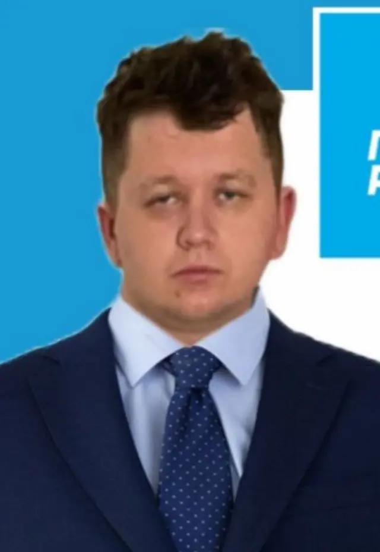

Михайло Лебігович
Михайло Лебігович – відданий громадянин, народився в маленькому та затишному селі, де він від самого дитинства набував цінних життєвих уроків. Він виріс серед простих, але добрих та працьовитих людей, що сформувало його віру в справедливість та прагнення допомагати іншим. Змалку Михайло виявив особливу турботливість до тварин та навколишнього середовища, що вразило його довколишніх. Ця любов до природи та турбота про вразливість інших стала невід'ємною частиною його характеру. Зростаючи, Михайло вчився та старанно працював, набуваючи досвіду у різних галузях. Він завжди був готовий взяти на себе відповідальність та допомогти оточуючим. Його прагнення допомагати і покращувати життя інших стало ключовим моментом у його житті. Михайло рішуче взявся за соціальну діяльність, спонуканий своєю бажанням зробити світ навколо кращим для всіх. Його прагнення підтримувати та розвивати місцеві спільноти, зміцнювати соціальну справедливість та допомагати найбільш вразливим стало основою для його участі в політиці. Михайло Лебігович вірить, що здорова екологічна ситуація, підтримка малого бізнесу, соціальна справедливість та загальний добробут можливі завдяки об'єднаним зусиллям. Він завжди готовий вислухати, допомогти та працювати на благо своєї спільноти та країни.